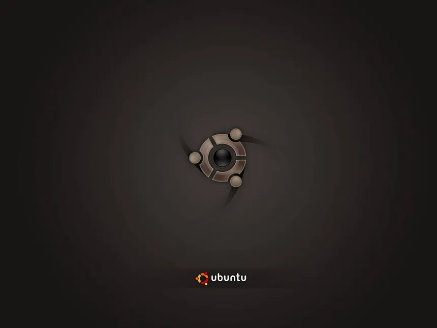
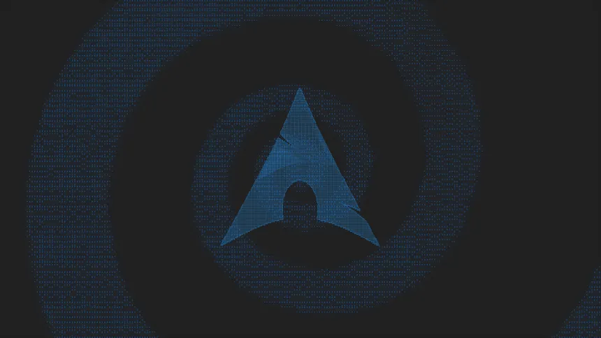

| Caratteristica | Informazione |
|---|---|
| Punto forte | Stabilità e affidabilità |
| Ideale per | Server, sviluppo, utenti che vogliono un sistema stabile |
| Software | Enorme repository |
| Aggiornamenti | Conservativi e testati |
| Difficoltà | Media |

| Caratteristica | Informazione |
|---|---|
| Punto forte | Facilità d'uso |
| Ideale per | Desktop, sviluppo, principianti |
| Software | Ampio supporto e repository |
| Aggiornamenti | Regolari, con versioni LTS |
| Difficoltà | Bassa |

| Caratteristica | Informazione |
|---|---|
| Punto forte | Controllo e personalizzazione |
| Ideale per | Utenti avanzati, sviluppo, apprendimento Linux |
| Software | AUR + repository ufficiali |
| Aggiornamenti | Rolling release |
| Difficoltà | Alta |